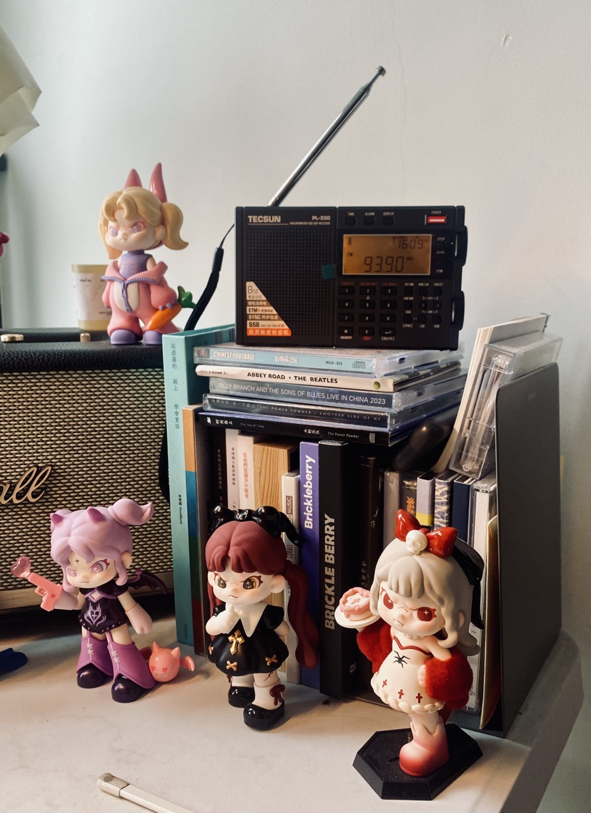
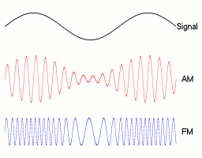
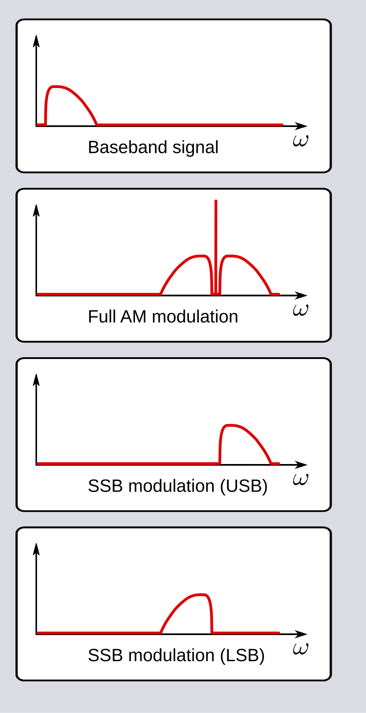
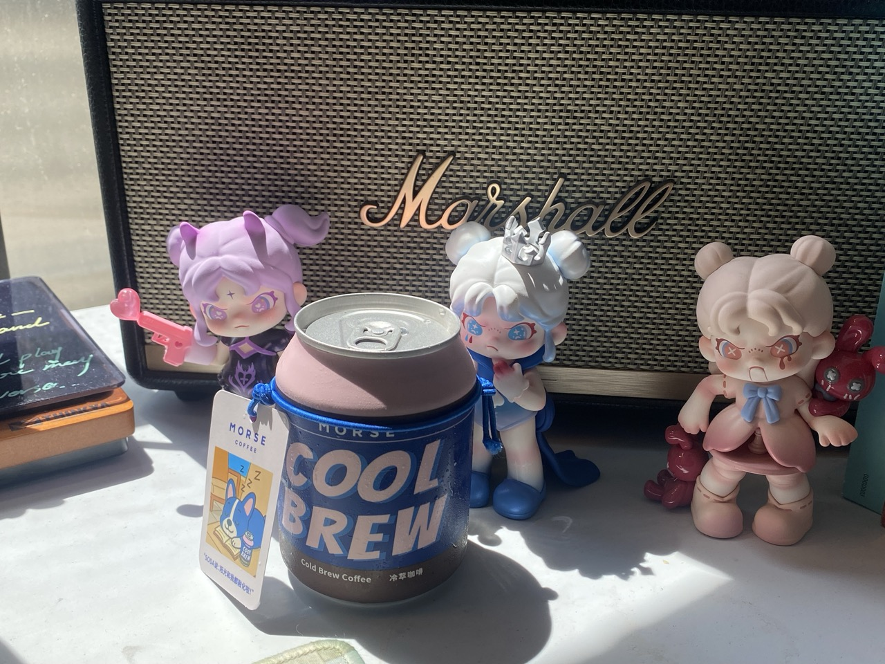
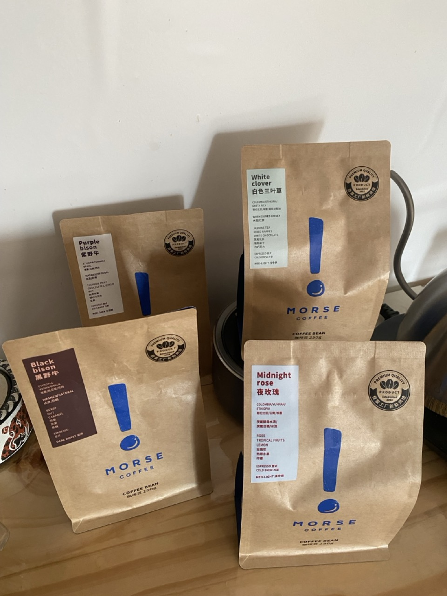
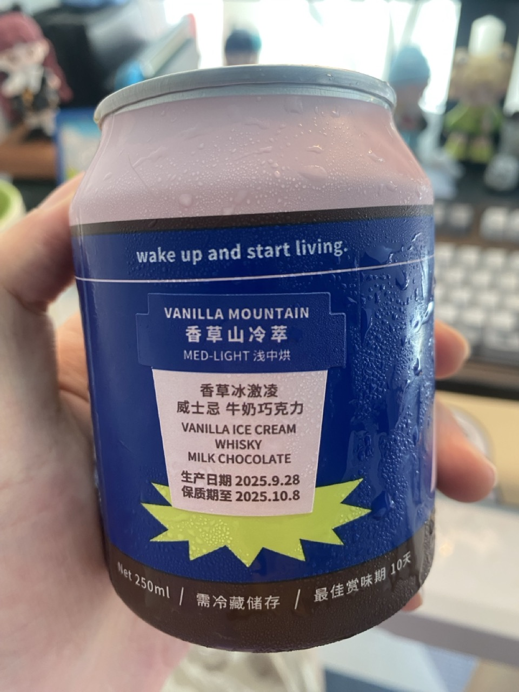
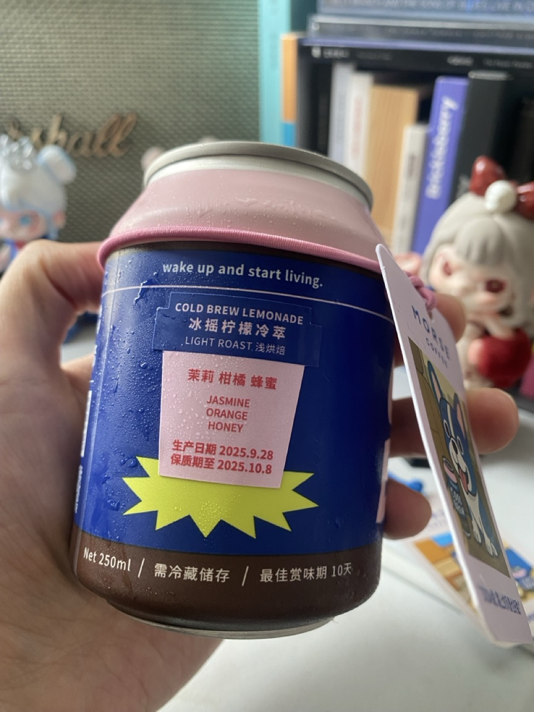
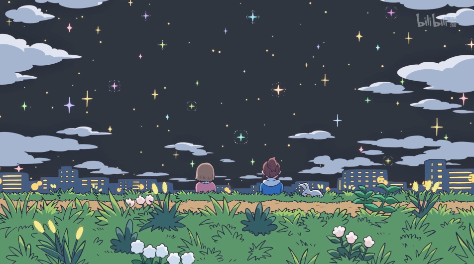

日常#5
PL-330 收音机、咖啡、通关空洞骑士、CITY 完结
前阵子桦加沙来袭，17 级的台风，看起来很吓人，不少城市都发布了五停（停工、停业、停市、停运、停课）, 所幸住的地方影响不大，就偶尔飘点小雨，没有感受到很大的风，也没有特大暴雨。
期间看了墨枫梧桐的 『桦加沙』到来之前，我如何做应急照明和通信，冲动之下也买了台德生 PL-330 收音机。
{kind=link}

PL-330 的功能很丰富，可以收听 FM(frequency modulation)、AM(amplitude modulation)、SW(shortware)、MW(midium-wave)、LW(long-wave)、支持电台的管理（记忆、删除、排序）、 ETM（Easy Tuning Mode）、定时开关机、SSB(single-sideband modulation) 等，可玩性蛮高的。
趁此机会，也稍微了解了一下 FM、AM、SW、MW、LW 的关系。
{kind=link}

人的声音属于低频信号，传播不远，想要广播到很远的地方，就需要调制成高频信号。从图 2 的 GIF 图看，无论是通过 FM 还是 AM 调制，波形都会比原始的信号密集很多，或许是因为密度高，就算传播到很远的地方也容易被识别，更能抗干扰；高频信号的 波长 短，相同的距离，高频比低频可以携带更多的信息，传输效率也会更高。
通过频率调制成高频的是 FM，平时听的电台基本都是 FM，多数都是当地的广播电台，相比 AM 稳定得多。
通过振幅调制成高频的是 AM，按照波长的长短又可以分成短波（SW）、中波（MW）和长波（LW）。波长受到频率影响，表现在收音机中就是不同的频段。
例如这是 PL-330 的频段：
- FM：64-108 MHz
- SW: 1711-29999 kHz
- MW: 522-1620 kHz
- LW: 153-513 kHz
短波可以借助电离层反射，可以传递得很远，可以用于国际广播，但也容易收到干扰，收到的声音很多噪点。短波的频段很广，比中波和长波都多得多。中波白天靠地波传递，晚上也可以借助电离层传播，相对短波而言传播距离可能没那么远，但会比短波稳定点。长波主要靠 地波 传播，但是长波的发射成本好像比较高，现在大部分国家很少发射长波。
从我的使用体验来说，短波覆盖的频段最广，我收听过英语、日语、台湾话、韩语/朝鲜语等电台，不过声音都相对比较糊，可能室内信号干扰多。中波我可以收听到香港和中央广播的一些电台，声音相对会清晰和稳定一些。
{kind=link}

收音机还支持 SSB(single-sideband modulation) 接收。
简单来说，AM 发送会形成两个边带，它们都编码了完整的原始信号，所以实际上发一个边带也是可以的。在发送端的优势是，相同功率输出下可以实现更远的传输范围。但在接收端，往往需要更高的成本制造，用的人不多，所以广播电台比较少用 SSB。我尝试过开启 SSB，收到的声音会变得更加单薄和尖锐，稳定性也没有提升，估计电台发送的也不是 SSB，所以我开启了也没啥用。
收音机还有一个不错的功能是 ETM (Easy Tuning Mode)，它可以自动地搜索频道，在 FM、AM 中都能用，省得自己用旋钮找半天，提供了不少便利。以后出去旅游，感觉可以带上它去搜索一下当地的电台，应该蛮有趣的。
如果是为了应急准备，确实没必要买 PL-330，找一个能收听 FM 的便宜收音机就好了。 PL-330 用的是锂电池，更适合日常用，应急的话我觉得干电池会更靠谱，毕竟灾害来了，电力往往很难确保。
如果只是想听电台，网络上也能方便收听全世界的电台（例如 Radiocast），而且声音要清晰得多，也没必要特意买一个收音机。
这次买 PL-330，是想为应急做一个准备，以防万一。它的外观也蛮好看的，看起来像是一个精密的仪器。除此之外，是因为我本身对收音机也有一些情怀。
初中的时候喜欢听一档深夜情感节目，叫「木凡的天空」，会有不少人投稿他们的故事，然后主持人把故事念出来。我也很喜欢节目的插曲：
- 🎵 Bressanone - Matthew Lien
🎵 消失的光年 - 大乔小乔
關於這首歌
以前听的时候不知道歌名，也就不好搜歌词。每次听到那句「每个人是每个人的过客/每个人是每个人的思念」，我都会听成「美国人是美国人的过客」，就很不明白和美国人有什么关系。但这样的联想，却又让我在听这首歌时，增添了一些遥远国度的幻想，似乎也和歌曲的情绪相称。
另外，推荐听听 大乔小乔 的歌，例如 农夫渔夫，旋律和歌词我都很喜欢：
如果有一天我能够拥有一个大果园
我愿放下所有追求做个农夫去种田
每一个早晨我耕耘在绿野田园
每一个黄昏我守望在乡间的麦田
我会把忧虑都融化在夕阳里
让孤独的心等待秋收的欢喜
哦 ⸺ 如果那个时候我身边没有女朋友
我不介意谁会来给我一个周末的问候
哦 ⸺ 如果那个时候我依然牵着她的手
我们会幸福的坐上树枝头
- 🎵 乱红 - 陈悦
在「木凡的天空」前后，好像还有一个音乐节目，名字是什么忘记了，只记得主持人叫「小真」，声音蛮好听的。她在节目里会介绍不少音乐，我也很喜欢听。
高中时也有听广播，那时手机还是诺基亚的实体键手机，自然也没什么短视频之类的娱乐。当时收听到一个电台，在播放一个广播剧，是改编自蔡智恒的《第一次的亲密接触》和 《爱尔兰咖啡》。广播剧的演绎很有趣，有旁白，有人演绎角色说台词，有各种模拟的声音和音乐。听完之后我还去图书馆找了很多蔡智恒的书看，大多都是关于大学或工作后的爱情故事。我看这类爱情小说不多，蔡智恒的书在我看来很有青春感、都市感，是我当时看过最好的爱情小说了。
后来智能手机普遍，不知什么时候开始就没有听收音机的习惯了。关于收音机的回忆，就剩下英语听力，还有我的外公。
外公也喜欢听听收音机，听的内容大多数是讲书和粤剧，印象中他还找我帮他买过收音机。小时候被外公外婆带大，等上小学后就相处得时间就少了很多，每次去都是吃个饭，简单聊会儿天，就又离开了。在平常的一天，外公躺在家里的椅子上离去了，也没有见到最后一面。小时候他总是带我去饭店喝茶，给我点大颗的牛肉丸，而长大后，却也没来得及多请他吃几顿饭。还是遗憾啊。
{kind=link}

最近买了不少 Morse Coffee 的咖啡豆，还买了新出的冷萃罐装咖啡。
说起 Morse，最初是和一个同事闲逛碰到的，当时的店员很热情，也很友好，还加了微信拉进了一个群里。后面知道有杯测活动，报名参加了一次，体验了一下杯测流程，还送了一包 100g 的咖啡豆，当然，也是有报名费的。再后来，它们的烘焙工厂开张，还被邀请去参加了活动，充当了个路人乙观众。
微信群里偶尔会有一些折扣活动，有一些他们剩下的上个月的库存会打折出售，2 件 5 折优惠，我觉得还是非常划算的，尽管不是最近烘焙的，可能没有那么新鲜，但他们的咖啡豆品质还是不错的，好的豆子不怕时间长，往往我都会买两包，够喝好一阵子了。
{kind=link}

最近也是买了 4 包不同风味的豆子，都是用摩卡壶煮成相对浓的咖啡液，混合牛奶做成拿铁。以前买过蓝野牛，应该是他们家卖的最多的豆子了，做成拿铁喝起来还不错。这次买的黑野牛，整体会偏苦一点；紫野牛比黑野牛好喝，风味多一些；夜玫瑰因为是厌氧处理的，有厌氧处理标记性的味道，算是风味中最浓郁的；白色三叶草还没喝，水洗和中浅烘的豆子，闻着有股淡淡的甜味。
罐装咖啡买了两种，香草山冷萃和冰摇柠檬冷萃。
{kind=link}

香草山也是 Morse 的一款豆子，冷萃出来没有苦涩的味道，大概也是酒桶发酵或者厌氧处理之类的，确实能喝出一种类似威士忌的风味，牛奶巧克力也能联想到，香草冰激凌就联想不到了。喝完之后，咖啡的余味能持续一阵子，再喝白水，会有回甘。整体来说我挺喜欢这款冷萃的。
{kind=link}

冰摇柠檬冷萃是加了糖的，很甜，第一口喝下去，和瑞幸的各种糖浆美式的口感一模一样。不过细品的话，还是能喝到一些柑橘味的，至于蜂蜜，都很甜，从甜感上来说是有这样的风味。茉莉的味道我就联想不到了，虽然闻过，但我对茉莉的味道也想象不出来。我不喜欢这款冷萃，太甜了，掩盖了咖啡本身的味道，喝起来像是在喝甜水。
如果你想买咖啡豆，可以看看 Mores Coffee，经常有活动，买一送一或者送冰箱贴、杯子啥的，豆子的品质我也觉得也 OK，性价比还是蛮高的。
手臂的手术过去很多天了，现在基本不会痛，也能用力干活了。只是伤口不能碰水，要避免感染，期间可能会让伤口沾水的事都在麻烦女朋友，受了很多照顾。
人体恢复能力还是很强的，每过一天都会好转不少。做完手术第一天手臂还挺痛， 第二天开始就恢复了许多，只要不用力都不怎么痛。
再过几天就能拆线了，这些天都怕出汗，等拆线后要多出去走走，运动个够。
做饭的锅用久了，涂层掉了不少，现在很容易糊底，煮开水也会闻到一些怪味，索性换一个锅。因为灶台下面放了洗衣机，用电磁炉的话，产生的电磁可能会损坏洗衣机，又没有通煤气，就只能买电热锅。
电热锅有两类，一种是分体式的，一种是一体式的。分体式的好处是锅比较轻，洗起来也不用注意什么，缺点是容易受热不均匀，火力也不够大。一体式受热均匀一些，但整体重了很多，洗的时候也要小心不要洗到插口。
这次买了一个美的的一体式的电热锅，最高功率 1800W，昨天做饭感觉火力还挺猛，不像之前那个锅一样，热起来要半天，还挺满意这次的购物。
前些天看到 GitHub 有通知，虽然有通知数量，但点进去却什么都没有，也没有地方能删掉，看着有点难受。
稍微搜索了一下，发现也 有人碰到类似的问题，可以用 GitHub CLI 通过 API 将这些通知标记为已读。出现这种情况，可能是这个仓库在通知之后，被禁了或者转成了 private，导致通知还是指向了用户，但用户又没有权限看，页面上也没有提供入口删除。
这些通知我的仓库我都没有参与过，不知道怎么就被关联上了。平时也会看到有的账号会反复地 follow 我，这些账号的 following 数量往往都是几K，看着不像是一个正常用户的账号，不知道他们在做什么。
断断续续地玩空洞骑士，最近通关了（涉及剧透）
查了一下攻略，把关键的能力 ⸺ 超级冲刺、二段跳都获得了，探索了很多原来去不了的地方。去了竞技场，过了两关，第三关还是有点难，留着以后打。
到处走，误打误撞地把剩下两个封印解除后，回到遗忘十字路的黑卵圣殿，发现里面捆绑着「空洞骑士」，他的雕像曾经在喷泉广场见过，纪念碑上写的是「纪念高远黑色穹顶下的空洞骑士它的牺牲使圣巢永世不衰。」砍断捆绑空洞骑士的锁链，进入了战斗，空洞骑士还是挺好打的，打到三阶段，会看到他开始用骨钉自残，不断地插入到自己的心脏，看起来很痛苦的样子。空洞骑士的模样和小骑士也很像，只是他更高大一些。好不容易打死了，按照提示对空洞骑士进行吸收，所有的感染都被吸进了小骑士的身体里，原来漆黑的眼睛闪着感染的橙光，接着锁链出现把小骑士捆绑起来，变成了「空洞骑士」曾经的样子，黑卵圣殿的入口再次封闭，唯一的不同是上面没有三个 守梦者 的封印。游戏结束。有点悲伤。
原来「纪念高远黑色穹顶下的空洞骑士它的牺牲使圣巢永世不衰」是这个意思，空洞骑士被用来封印所有的感染，以此来拯救圣巢。可是如今的圣巢依然衰败了，圣巢四处也依然看到一些被感染的虫子，看来是封印失败了。而小骑士被呼唤过来，最终也变成了封印感染的空壳，或许又会有下一个小骑士重复这个轮回吧。
看了攻略，游戏还有其他结局，后面再慢慢玩。
这个夏天也 终将 成为那个夏天。
夏天结束了，CITY （小城日常） 也完结了，很精彩的动画，色彩绚烂、温暖、明亮，剧情充满创意和巧思，让人快乐和感动。推荐一看！
{kind=link}

夏天就要结束了啊
今年夏天一结束， 明年的夏天就在路上了
- 🎵 Hello - Furui Riho (动画 OP)
- 🎵 LUCKY - TOMOO（动画 ED）